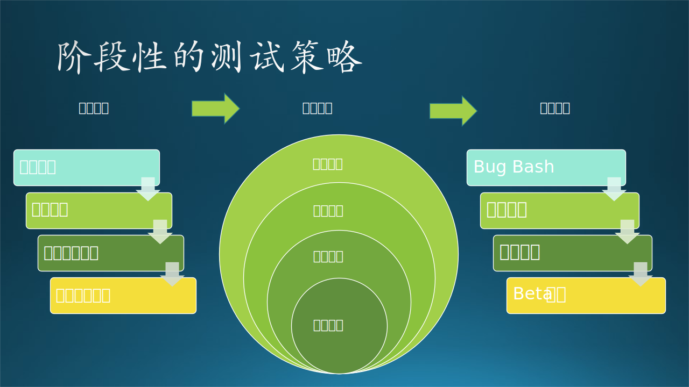
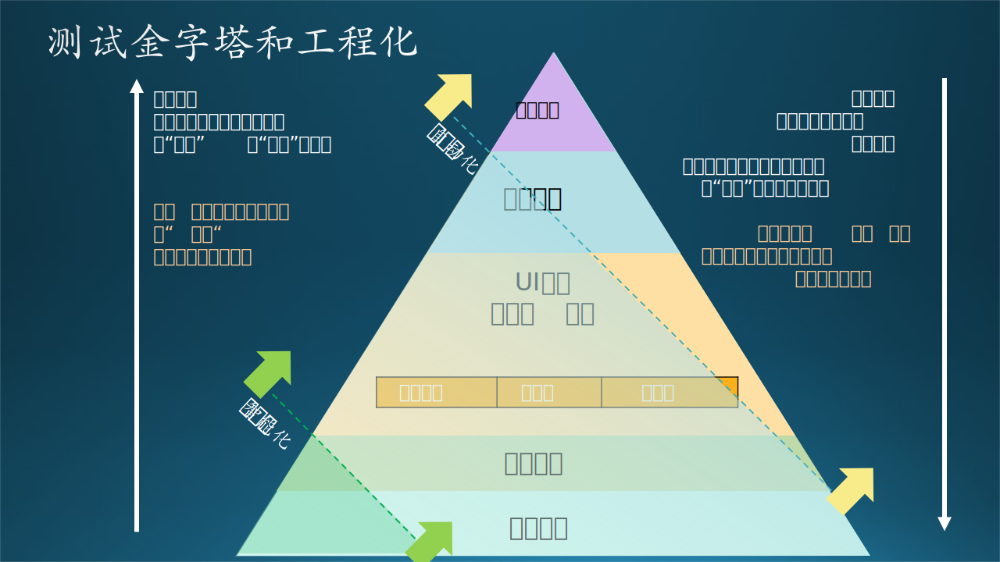

16.4 测试工程化
16.4 测试工程化⚓︎
有了自动化测试的“能力加成”，整个软件测试过程可以变得更加流水线化（Streamlined）。但是，软件测试是一个涵盖众多测试类型、测试技术的领域，如果在软件生产车间中，从设计到发布上线之间的软件生产流程中，有效的嵌入各种软件测试，使其成为一个有机结合的工程体系，就是我们本节“测试工程化”想探讨的问题。测试工程化是一个在软件工程领域中逐渐发展起来的概念，并不是一个“学术名词”，没有一个公认的“定义”，不过这对于软件开发和测试工程师来讲，完全不是一个问题。
测试工程化是将软件测试纳入整个软件开发过程中的一种方法，就是为了提高测试效率、质量和可持续性，让产品质量时刻出于验证基线的相对安全标准之内，让大家可以早点安心下班，具备非常实惠和实际的意义。我们先回到本章最初的故事中，体会下测试工程化这个“非学术命题”下，要解决的一些实际问题。
16.4.1 自动化测试体系成形之后⚓︎
小陈给Phone Link产品体系搭建起初步的自动化测试之后，和多个功能团队对接， 受到了各路好评，成就感爆棚，心情大好。看到木头在公司的英文名叫Wood，给自己也起了个英文名Nathan，翻译过来叫“内森”，胸有成竹之意，他和木头开玩笑说：“你品品，你细品”。两人正聊着，邻居团队的小郭找过来，说道：
“小陈，啊不对，内森，咱们现在往主分支里写个代码，合入之前要跑单元测试，还要跑端到端的全量的UI测试，一次验证下来，不算编译都要40分钟，大伙们都有点受不了。”
“哦？现在要40分钟吗，那再加上编译时间，前后一共要一个多小时了是么？”小陈问道。
“是啊，有的时候莫名其妙要到一个半小时。有时候等半天跑过了，其他同学过来代码评审提一条建议，这一修改又是等好久，现在PR拖几天进不去是常事。”
“这问题挺严重，为什么会跑40分钟呢？”小陈沉吟道。
“我之前在Windows团队，一个验证跑两个小时是常事，为了质量，宁可错杀，不能放过。”木头过来先圆个场，接着说：“小陈你看看，这个40分钟的测试是不是没必要作为每次合入都验证的内容？咱们团队规模也不小，一天30多个pull requests，可能测试系统也负载不过来吧。”
大家聚到电脑前检查了测试流程，除了1500个大大小小的单元测试，10多分钟跑完；还有30多个“事无巨细”的UI测试用例，平均每个要跑不到1分钟，加起来一次跑20多分钟。大家一起盘了盘这些测试用例，里面有些很基本的验证，也有些很细枝末节的corner case的验证，还包括一些性能验证方面的测试用例。
“这个测试用例集合里面杂七杂八的用例有点多。”木头说道：“谁没事加了这么多case？有的写的还挺复杂，这函数调用有的我都没见过。”
“有的是功能团队写功能的时候加上的，还有一部分性能相关的、bug回归测试貌似是实习生小刘加的。”小陈回答：“可能用来检验每个代码改动不太合适。”
“那是相当不合适！”老张突然出现在围观队伍里，吼了一声，把小陈吓了一跳。
老张接着说：“高频验证高频，低频验证低频。这里面有的case根本不用放在CI或者BVT里面，后置一些，放到发布前的验收测试都行了。”
小陈惊叹于老张每次一出口都可以把自己说蒙，好像在听软件开发领域的“道德经”，回过头来愣住盯着老张。木头静静的“欣赏”着两人的互动三秒后，开始继续“破冰行动”：
“老张讲的过于精辟，很有道理，我来给翻译翻译。”木头稍稍一顿，接着说：“就是说，高频的验证环节应该验证高频的用户场景的用例，比如每次代码合入请求都会触发的验证测试，不太适合验证一些用户低频场景，比如这个用例，打开设置菜单，滑动到底，进入隐私条款，滑到底，打开隐私条款内容等等，这个用例太细致，也是用户使用过程中比较低频的操作场景，放到验收测试或者某些全量回归测试就行。”
“懂了，所以什么时机做什么测试，是一门学问。”小陈说：“我得把这事情理清楚，回头用一些文档界定一下，不然大家写自动化的测试用例，不清楚放在哪里。”
“对喽，搞测试工程，要讲究策略的。”老张一副“孺子可教”的样子，继续老气横秋的说道：“质量把控肯定要严格，但是依然要和效率做平衡，每改一行代码都把整个软件颠来倒去测一遍肯定不合适。测试的策略就暗含着对风险的评估，而风险评估又对应着一个产品开发团队的优先级。测试工程里面需要运用多种测试来构建一套在效率和质量平衡点上的体系，让大家可以安心地早点下班，哈哈。”老张说完，一帮人里只有他自己在笑。
“小陈，咱们这次责任范围可以‘晋级’了，你以后就不只是咱们团队自动化测试的负责人了，是整个测试的负责人了，哈哈哈。”依然只有老张自己在笑，不过这次因为老张在对着小陈说，小陈迫于面子压力也干笑了一声。老张继续说：“你可以把咱们手工测试、工程师内测、alpha/beta用户测试都盘点一下，建立一个工程化的测试体系。”老张是湖北人，心想这事情如何跟九头鸟挂上关系，略微一顿，接着说道“起个名，就叫Hydra Lab，九头蛇，啥都能干，让这些流程Just In Time，岂不妙哉。”
小陈知道老张说的很有道理，“Hydra Lab”也听起来是个很棒的名字，不过对于他画的这个“大饼”的确有点吃不消。木头又一次加入到讨论中，几人转战食堂饭聊，逐渐越扯越远：“就说不远的未来，有一个办公楼里一个人影没有，不开灯，只能看见几个亮着的屏幕、听见机器嗡嗡作响。全自动写代码！几个不同人格的AI自己开发自己测，自己发版自己上线，你说吓不吓人。”“吓人，太吓人了。”“好孩怕。”“全是小陈搞出来的，人家从测试发家，搞自动化、工程化、智能化，再从测试驱动开发，最后赢家通吃了。”“太强了，给大佬夹菜，求带！”“你们可太能扯了，逗死我了。”几个人聊得好不风趣。
16.4.2 测试工程化要点分析⚓︎
测试工程化的概念是建立在现代软件工程的敏捷开发、DevOps等理念之上的，综合了测试策略、自动化测试、持续集成和持续交付、质量度量等方面，是将测试纳入软件开发全程的方法，力图为软件开发提供可持续的、高效的质量保证。
至于如何纳入，首先，测试和验证的流程应该和“变化”绑定，这种变化不止于代码修改，还可能包括： - 上线和发布：软件交付给一个用户群体。 - 版本变化：比如线上用户软件从v1升级到v2。 - 做实验：一个新的功能开启。 - 内部依赖变化：把类库从1.1升级到1.2。 - 外部平台的变化：比如用户的设备操作系统大范围从Windows 10升级到11。
等等，总之，变化可能不止源于自身，有可能来自软件的“四面八方”。而这些变化隐含了风险。任何成功的测试工程化流程都需要一个明确的测试策略和计划。这涵盖了确定测试目标、范围和优先级，并根据项目需求以及风险评估来确定测试的重点和覆盖范围。
此外，重复性任务和回归测试通过编写可靠的自动化测试脚本进行自动化，然后这些脚本将集成到持续集成和持续交付（CI/CD）流程中。测试环境和数据管理也是必不可少的。需要建立适当的测试环境，包括硬件、软件和网络配置，并对测试数据进行有效管理，如数据准备、数据脱敏和数据回滚。一旦测试环境和数据准备好，测试便可以集成到CI/CD流程中。这确保每次代码提交都会触发相应的测试，并将测试结果反馈到版本控制系统和构建工具中。
与此同时，测试人员、内测团队（如运营人员）应与开发人员紧密合作，响应反馈，进行持续集成、测试优化和缺陷修复。测试工程化流程还应包括持续监控和反馈机制，例如建立监控和日志系统，以便收集和分析生产环境中的运行数据和问题，提供反馈，并及时发现并解决性能问题和异常。如果有条件有需求，还可以制定质量度量和报告标准（Baseline），用于对测试结果和软件质量进行定量评估，并生成清晰的测试报告以供决策者参考。适当的培训和知识分享、建立适当的文档和知识库也大有裨益。
总结起来，测试工程化是一个复杂命题，但和软件工程的各方面相呼应，而且越来越模式化。笔者认为，最终和AI、机器学习的融合是不可避免的，，测试团队应该保持密切关注，能掌握和应用起来是最好不过的。
16.4.2.1 “Just In Time”的自动化测试⚓︎
自动化测试可以在软件开发的多个阶段被引入，“纳入”的时机安排原则上和“测试金字塔”的理念很相似。测试金字塔原则大致可以描述为，根据测试覆盖范围和稳定性的不同，将测试分为不同层级，形成金字塔形状。底层是单元测试，中层是集成测试，顶层是用户界面测试。金字塔原则鼓励更多的测试放在底层，减少顶层的测试，以提高测试速度和稳定性。以下简单罗列一些常见的自动化测试类型，以及它们可以接入的开发阶段和时间点：
- 单元测试：一般每当代码有任何变化，例如新增或修改代码时，就可以触发全量的自动化单元测试。目标是确保每个代码单元（如函数或方法）按照预期进行工作。
- 集成测试：简言之，当单个代码单元被组合在一起时，进行跨单元或模块进行的测试就叫集成测试，用以检测不同组件间的交互是否存在问题。集成测试可以每次提交代码时自动运行，也可以定期运行。
- 冒烟测试：冒烟测试目标是看看改了之后还能否“通电冒烟”，确认新的改动没有破坏软件的基本功能。通常在每次构建后进行，称为BVT(Build Validation Test)。
- 性能测试：通常在BVT之后或者和回归测试并行进行，目标是评估软件系统的性能表现。有时会结合一些压力场景进行，也有通过一些“长途测试”（Long-haul Test）来暴露问题。通常在每个主要的版本发布前，或者当系统架构发生重大变化时进行。
- 回归测试：当系统中有新的功能添加或者现有功能被修改后，进行回归测试。目标是确保这些更改没有引入新的错误或重新引入旧的错误。可以在每次构建后或部署前进行。
- 验收测试：验收测试的目标是全面验证软件系统是否满足业务需求和用户期望。在每个冲刺结束时或新版本发布前进行。

每个测试类型的频率可能会根据项目的具体需求和实际情况进行调整，要综合评估投入产出比ROI，测试用例的覆盖情况、被验证功能的优先级和就近原则：什么被修改了、什么可能受到影响了，就着重测试什么。这个刚刚故事里，老张提到的“Just In Time”的测试很像，但在一个代码行数百万级的复杂的软件系统中，即使在设计层面无论多么“松耦合”、“幂等”，“通过修改的内容去推断出什么测试需要被运行”依然是一个终极难题，这已经超越了白盒视角，来到了“上帝视角”：需要全面分析软件内部的依赖关系、逻辑路径和演进情况。这也许真的是一个AI才可能解决的问题。

16.4.2.2 软件自测和内测⚓︎
软件的自测和内测的含义没有公认定义。在本章节中，统一口径为：自测指开发团队自己对自己开发的产品进行测试的过程，内测指开发团队请自己的软件社区内部用户进行测试的过程。本章最初假定了软件自动化测试是指测试全流程的自动化，那么自测和内测，也可以作为测试工程化的一部分，并进行一定程度的自动化。
上一章中，我们提到，在微软，团队自测和号召公司同事试用和自测软件，几乎已经成为了微软质量控制流程和文化的一部分，这样的活动一般叫做Self-hosting或Bug Bash。同时，在上一章我们也已经提到了一些活动组织的技巧和提高测试效率的技术手段，这里不再赘述。其实鼓励参与感和方便的工具、友好的测试环境搭建指南是最关键的，让大家快速上手、乐在其中、有获得感。这类活动一般可以定期举行，也可以在特定时间点（如功能实现完成后，Code Complete之后）进行。另外，工程师在开发过程中自己写的单元测试、集成测试，也是自测的重要部分。
软件内测，也称为Beta测试，是指在软件正式发布之前，将软件提供给一部分用户进行测试的过程。这样可以让开发者及时发现并解决软件中的问题，提高软件质量。内测用户群体通常是由开发者或公司组织和维护起来的，也有用户自发形成的。他们会在使用过程中反馈问题和建议，帮助开发者改进产品。其中的一些技术要点包括： - 招募测试用户：招募一组用户来测试软件，包括目标用户和广泛的用户群体，并建立面向他们的软件分发渠道。 - 部署测试版本：向测试用户分发软件的测试版本，让他们在真实环境中使用和评估软件。 - 收集反馈：设置问题反馈渠道，并能通过该渠道收集到详细的诊断报告，如Bug报告、错误信息、堆栈信息等。 - 问题追踪和管理：建立问题追踪系统（如Jira、GitHub Issues、Azure DevOps Bug）来记录和跟踪测试用户报告的问题，并确保问题得到适当的解决。 - 修复和更新：根据测试用户的反馈和问题报告，修复软件中的问题，并更新软件版本。
有些面向国内软件的内测用户依靠QQ群来维护，分发就是想群里发安装包文件，如果用户一侧发现了软件崩溃，也是让用户把堆栈提取出来，以文本的形式发消息到群里，这就比较原始，自动化和工程化程度不高；对于“小”软件、“小社群”也许简单有效，但如果是管理上万人的内测社群，就非常吃力了；这时我们可以依赖软件分发平台来向对应渠道的用户提供内测版本，比如Microsoft Store的分发平台就原生支持Flight 航道的功能，可以定义航道的优先级和目标用户，实现多渠道分发。